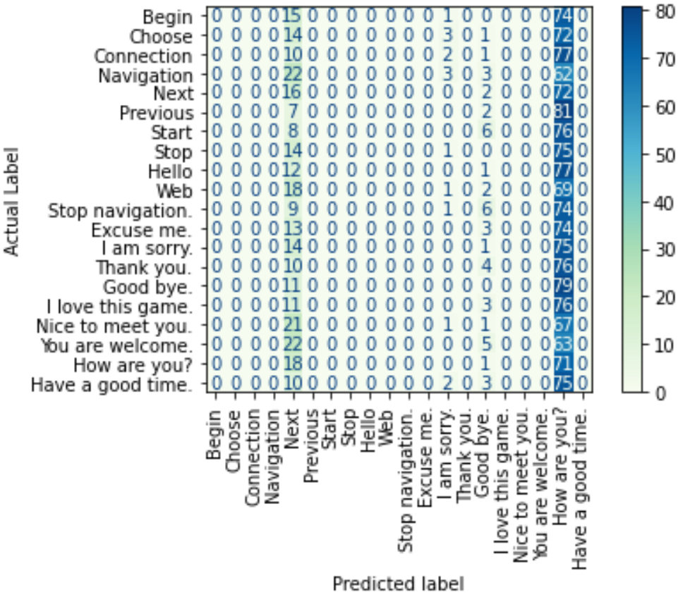

In this blog update, we will talk about the last data preprocessing step that we did on our dataset instances, the zero-shot results of the vision-and-language-transformer (ViLT) on our dataset, and what we are working on next.
Further Data Preprocessing
In blog post #3, we demonstrated how we preprocessed our training and testing data by cropping each image such that the output is a 90x90 pixel image of just the face. After this step, each instance in our dataset is made up of a sequence of several 90x90 pixel images of a certain participant while they are speaking out a certain utterance, one image per point in time. However, in order to input our data into the ViLT model, we would like to have one input image per instance. Consequently, we opted for concatenating, using OpenCV, all images resembling a certain utterance into one bigger image, transforming the temporal information into spacial one [1].
Since different utterances have different lengths and different participants have different speaking speeds, not all instances are actually made up of the same number of images. More specifically, the shortest instance is made up of just 4 images, while the longest one has 27 images [2]. Following [1], our final concatenated image for each instance is made up of 5x5 smaller images (90x90 pixels each). Hence, the final dimensions of each concatenated image is 450x450 pixels. For instances which are shorter than 25 images, instead of appending black images (pixel values of 0) at the end of the sequence, we follow [1] and stretch out the sequence of images filling the empty slots with the nearest image. More specifically, if the original sequence (orig_seq) has a length of orig_len, then the ith image in the stretched sequence (stretch_seq) is given by the following equation adapted from [1].
The figure below shows a sequence of images resembling a single data instance before and after this preprocessing step of stretching and concatenating. After this step, our data is now ready to be input into our model for fine-tuning and testing.
Zero-Shot Results
Before fine-tuning the ViLT model on our fine-tuning dataset and evaluating its performance on our testing dataset, we wanted to examine its zero-shot performance (before fine-tuning). Zero-shot evaluation is basically when a pre-trained model is tested on a dataset different than the one that has been used during its training. Consequently, we evaluated the classification performance of the pre-trained ViLT model on our testing dataset (1800 intances) in a multi-class classification problem with 20 classes (correspoding to the 20 different utterances in our dataset). The classificaiton accuracy was found to be 4.83% and the below figure demonstrates the resulting confusion matrix.
As can be seen from the confusion matrix, either the label "Next" or "How are you?" was predicted for almost all of our testing instances. A couple of instances were instead predicted as "I am sorry." or "Good bye.". With a total of 20 classes, the zero-shot accuracy is actually equivalent to that of a random guesser (5%), which is definitely a really low accuracy.
Next Steps
We are currently working on fine-tuning the pre-trained ViLT model on our fine-tuning dataset so that we can then re-evaluate its performance on our testing dataset. We will compare its performance with that of a random guesser and an encoder-decoder approach using CNN and LSTM. We will also discuss possible future directions that we believe might be worth pursuing.